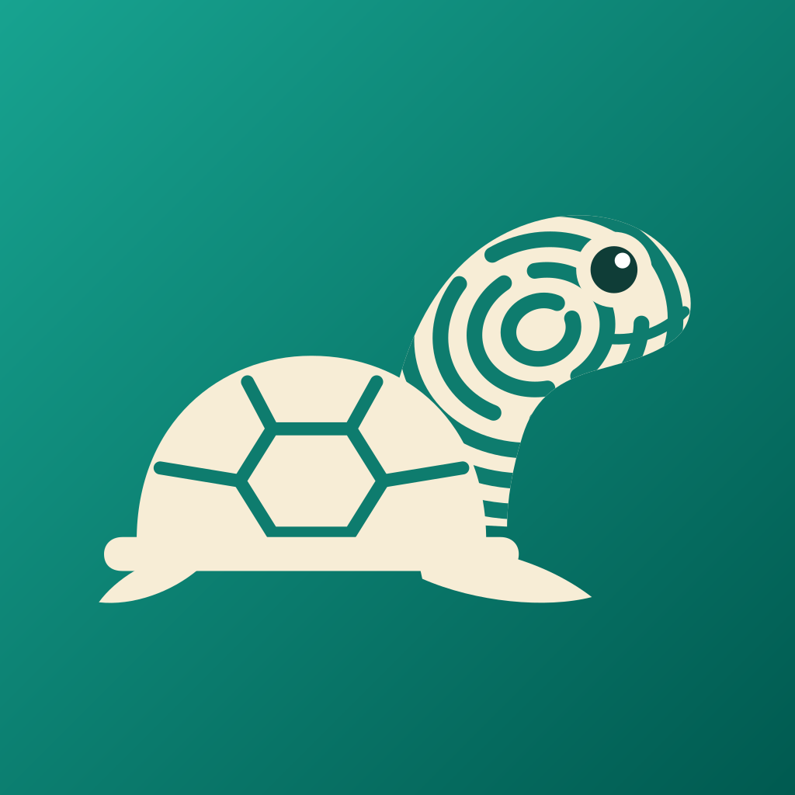
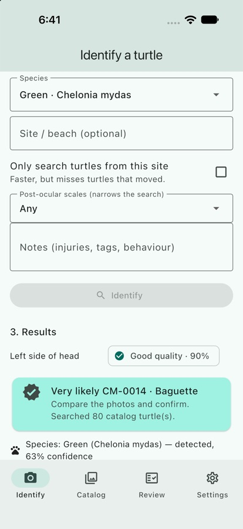
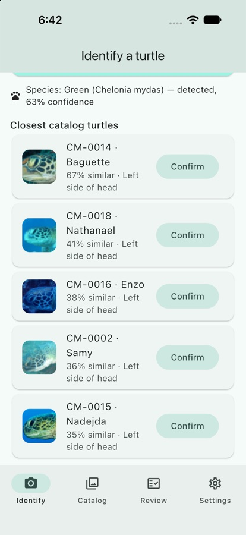
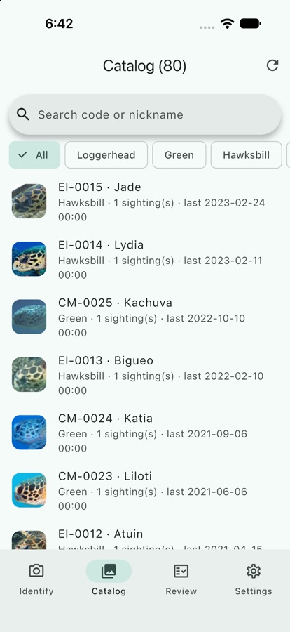

Proyecto de maestría · Islas GalápagosTurtles iD
Fotoidentificación de tortugas marinas individuales, sin conexión a internet, en el teléfono durante el trabajo de campo o en la laptop de la estación.
Seguir a cada tortuga durante décadas
Marcas invasivas
Las marcas físicas molestan al animal y se pierden con los años, lo que rompe el historial de cada individuo.
Comparar fotos a ojo
Sin marcas, el investigador compara fotos manualmente. Cada vez toma más horas a medida que crece el catálogo.
Se necesita una forma no invasiva, rápida y que funcione en el campo, donde no hay internet.
El rostro de una tortuga es su huella digital
Las escamas de la cabeza forman un patrón único que no cambia en toda la vida del animal.
Basta una foto
Sin capturar ni tocar al animal.
Sin conexión
Todo el reconocimiento ocurre en el dispositivo.
El investigador decide
La app sugiere; nunca decide sola.
De la foto a una sugerencia, en segundos
Captura guiada
Revisa nitidez, luz y movimiento, y dispara sola.
Detección
Un modelo localiza la cabeza, la recorta y distingue izquierda y derecha.
Especie
Se sugiere la especie; el investigador puede elegirla.
Huella
Una “huella” de 512 números se compara con cada foto del catálogo de ese lado.
Decisión
“Muy probable”, “posible” o “sin coincidencia segura”: decide el investigador.
Con 90 fotos más recientes (modelo ronda 7)
| Caguama | Verde | Carey | |
|---|---|---|---|
| Tortuga correcta en primer lugar | 70 % | 60 % | 80 % |
| Tortuga correcta entre las 5 primeras | 80 % | 92 % | 93 % |
| “Muy probable” equivocado | 0 | 0 | 0 |
Cuando la app dice “muy probable”, no se equivocó ni una vez. Cuando duda, lo dice y deja la decisión al investigador.
Una prueba pensada para Galápagos
Fotos posteriores al catálogo. Cada foto de prueba se tomó después que las del catálogo, como en el uso real año tras año.
Un sitio nunca visto. Las tortugas verdes y carey son de Reunión, un sitio con el que el modelo nunca entrenó, como ocurrirá en Galápagos.
Tres especies. Caguama, verde y carey, cada una con su propio catálogo.
Prioridad a no equivocarse. Se mide el error del “muy probable”, no solo el acierto.
Pensada para el trabajo de campo



Un solo código, cinco plataformas
App (iPhone, Android, Mac, Windows, Linux)
Modelos
Servidor e infraestructura
210 pruebas automatizadas. Código fuente disponible para evaluadores bajo solicitud.
La app real, en el navegador
La demo es la app real de iOS con 80 tortugas ya en el catálogo.
From gallery
Elige una foto de muestra.
Especie
Selecciona la especie de la foto.
Identify
Revisa las tortugas sugeridas.
Las sesiones duran hasta 3 minutos. Enlace en la última diapositiva.
Para revisar el proyecto
Sitio del proyecto
andresmunoz-p.github.io/turtlesid-site
Demo en el navegador
appetize.io/app/b_bqczxibgs7rxjvvsjzryeprfvi
Video de presentación
youtube.com/watch?v=vCOHBEfMl3Q
Gracias
Datos de entrenamiento: SeaTurtleID2022, Zindi Turtle Recall, ReunionTurtles y otros, para investigación no comercial.